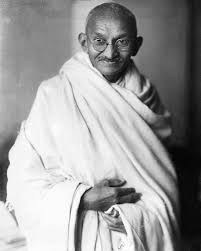

Mahatama Gandhi
1893 – 1948
Father of the Nation
Mohandas Karamchand Gandhi(2 October 1869 – 30 January 1948) was an Indian lawyer, anti-colonial nationalist, and political ethicist who employed nonviolent resistance to lead the successful campaign for India's independence from British rule. He inspired movements for civil rights and freedom across the world. The honorific Mahātmā (from Sanskrit, meaning great-souled, or venerable), first applied to him in South Africa in 1914, is used worldwide.Born and raised in a Hindu family in coastal Gujarat, Gandhi was trained in the law at the Inner Temple in London and was called to the bar at the age of 22. After two uncertain years in India, where he was unable to start a successful law practice, Gandhi moved to South Africa in 1893 to represent an Indian merchant in a lawsuit. He went on to live in South Africa for the next 21 years.Gandhi's birthday, 2 October, is commemorated in India as Gandhi Jayanti, a national holiday, and worldwide as the International Day of Nonviolence. Gandhi is considered to be the Father of the Nation in post-colonial India. During India's nationalist movement and in several decades immediately after, he was also commonly called Bapu, an endearment roughly meaning "father".
Biographies
- My Days With Gandhi. by Nirmal Kumar Bose.
- A Week with Gandhi. by Louis Fischer.
- Mahatma Gandhi: Nonviolent Power in Action. by Dennis Dalton.
- Gandhi's Religion: A Homespun Shawl. by J. T. F. Jordens.
- Harilal Gandhi: A Life. by Chandulal Bhagubhai.